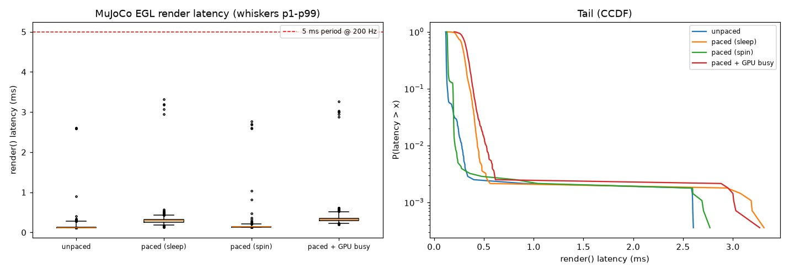
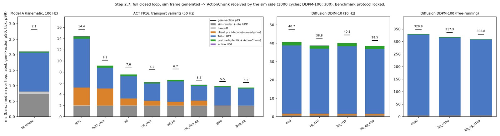
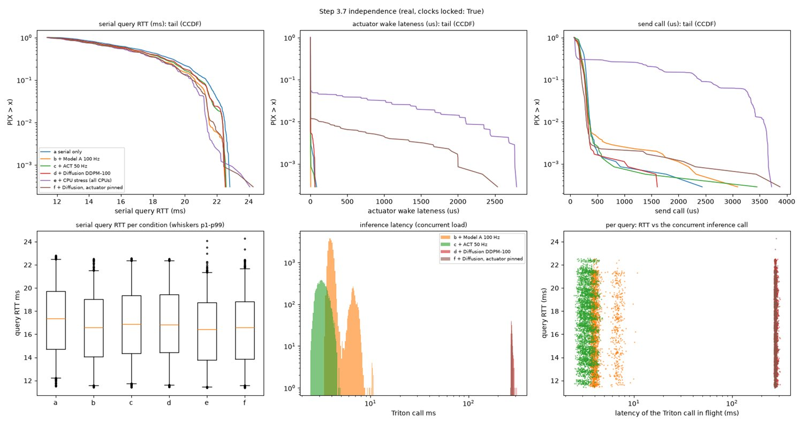

A hardware-in-the-loop pipeline that connects a real six-joint robot arm to GPU policy inference, measures the latency of every hop, and tests whether a busy GPU disturbs the arm's control timing.
When a GPU is busy running policy inference, does the timing of the robot arm's control link get worse?
The answerNo, not measurably. The arm's 15 Hz control tick held 66.67 ms at the 99th percentile with the GPU idle, running a transformer policy, or running a diffusion policy back to back at the GPU's power limit. What did disturb the loop was CPU contention: with every CPU thread saturated, the actuator process woke up to 2.1 ms late.
A learned robot policy runs on a GPU. One call takes anywhere from 2 ms to 300 ms depending on the model, and the time varies from call to call. The motors, on the other hand, need a new target on a fixed beat. If the control loop waits for inference, every variation in inference time becomes variation in the motion.
The usual design answer is to decouple the two. The policy runs asynchronously and returns a chunk of future actions. A separate actuator loop plays the newest chunk out at a fixed rate and never waits for the GPU. The claim this design rests on is that actuator timing is independent of inference load. That claim is usually assumed. This project builds the pipeline, measures it hop by hop, and tests the claim on hardware.
Success was defined as measurement and explanation: a latency distribution for every hop, with a stated cause for the shape of each one.
| Component | Used here |
|---|---|
| Arm | Elephant Robotics myCobot 280 M5, six joints, USB serial at 115200 baud, desk-mounted |
| Host | Laptop, Intel Core Ultra 9 185H (22 threads; P, E and LP-E cores), NVIDIA RTX 4070 Laptop GPU (8 GB, 55 W limit), Ubuntu 24.04 |
| Inference | NVIDIA Triton 24.08 serving TensorRT 10.3 engines |
| Simulator | MuJoCo, offscreen rendering on the same GPU, 200 Hz |
| Policies | Model A: hand-written inverse-kinematics policy, no ML (the control condition). ACT: pretrained transformer policy. Diffusion Policy: pretrained, 10 or 100 denoising steps. |
Six design decisions carry the result:
Formal measurements follow a fixed benchmark protocol: GPU core and memory clocks locked, CPU governor set to performance. A script checks the state and the formal runs refuse to start without it. The reason for the protocol came out of the first phase.
The simulator sends frames through the UDP link to a receiver that discards them. This is the control condition for everything later. The target was under 2 ms at p99 for pure software overhead (serialize, send, deserialize).
| 3 runs × 5000 frames | Default power management | Clocks locked |
|---|---|---|
| Achieved simulator rate (target 200 Hz) | 198.6 – 199.8 Hz | 200.00 Hz |
| Missed deadlines | 5 – 35 | 0 |
| Software overhead, p99 | 169 – 194 µs | 133 – 147 µs |
| Render, p99 | 4.5 – 4.9 ms | 1.0 – 1.3 ms |
| Frame generated to received, p99 | 4.5 – 5.0 ms | 1.10 – 1.35 ms |
| Frames lost | 0 | 0 |
The target was met by about ten times. Two tails needed explaining, and neither had the usual cause.
About 25 µs or about 120 µs. Garbage collection, socket buffers and the Python interpreter lock were each ruled out. Pinning the receiver to each core type settled it: the slow mode is the receiver thread being woken from sleep. On the low-power cores every packet was slow; a busy-polling receiver on performance cores had none (p99 161 → 35 µs).
At 200 Hz the GPU is idle about 97% of the time, so the driver drops it to its lowest power state between frames. Each frame then pays to re-clock. Locking the core clock alone did not help, because the driver still parked the memory clock. Locking both took render p99 from 3.6 to 0.44 ms.

This mattered beyond Phase 1. The simulator and the policies share one GPU. Without locked clocks, starting inference would have sped up the simulator by keeping the GPU awake, and the load generator would have been coupled to the system under test. The same effect exists on the CPU: paced calls ran three times slower than back-to-back calls because the processor held an under-used core at low frequency.
Both learned models were exported to ONNX, compiled to TensorRT, validated numerically against the original PyTorch model, and served by Triton. Before either was timed, eight predictions were written down from an analytic cost model (operations and bytes moved per call against the GPU's compute and memory-bandwidth ceilings).
| Prediction, written first | Measured | Result |
|---|---|---|
| ACT at half precision: 1.5–3 ms per call | 1.83 ms | held |
| Diffusion, 100 steps: 230–280 ms, linear in step count | 262 ms on the GPU, linear (R² 0.9997). The served loop took 367 ms. | GPU held, loop missed |
| 8-bit quantization speeds Diffusion 1.6–1.9×, ACT 1.2–1.6× | 1.76× and 1.35–1.49× | held |
| Batching 4: Diffusion same latency, ACT 3–4× latency | 1.0× and 3.3× | held |
| Diffusion is limited by memory bandwidth | Memory 82% of peak, compute 12% | held |
| ACT is limited by compute | Neither saturated: memory 40%, compute 22% | wrong |
The two misses were the informative part. The cost model counted the model's weights but not its activations: ACT's image feature maps add about 110 MB of memory traffic per call, and its 385 kernels are too short to fill the GPU at batch size one. For Diffusion, the model described the GPU kernels correctly but not the system: a chain of 100 short calls pays a per-call host cost 100 times.
The full loop was then closed in simulation: frame rendered, sent over UDP, policy called through Triton, action chunk sent back and executed. Each variant ran for 1000 policy cycles with no chunk lost.
| Policy | Served as | Frame to action, p50 | p99 |
|---|---|---|---|
| Model A (no ML) | Python backend | 2.12 ms | 2.81 ms |
| ACT | Float image tensor over gRPC (first version) | 14.42 ms | 15.56 ms |
| ACT | 8-bit image via shared memory, CUDA graph | 5.77 ms | 6.53 ms |
| ACT selected | JPEG sent as-is, decoded on the GPU, CUDA graph | 5.25 ms | 6.12 ms |
| Diffusion, 10 steps | Loop inside Triton, CUDA graph | 38.55 ms | 41.41 ms |
| Diffusion, 100 steps | Loop inside Triton, CUDA graph | 308.8 ms | 328.7 ms |

The filter checks every chunk in a fixed order: non-finite values or a malformed duration reject the chunk and the arm holds; joint limits are clipped; a jump of more than 30° from the current command is clipped; speed is rate-limited; and the chunk is cut off at the first target that would bring any link within 4 cm of the table. The actuator adds a 250 ms watchdog, a tracking check, servo temperature and voltage monitoring, and a stop on any serial error.
Faults were injected into a live command stream on the real arm, in one 63-second run:
| Injected fault | Observed on the arm | Time to safe state |
|---|---|---|
| Not-a-number target | Chunk rejected, arm held, nothing from it sent | 52 ms |
| Step duration of 1000 ms | Chunk rejected, arm held | 52 ms |
| 300 random bytes | Dropped by the receiver before the filter | – |
| Joint target 32° past its limit | Clipped: one bounded 2.1° step, then back on track | 52 ms |
| 25° jump on one joint | Rate-limited: joint peaked at 2.98°, returned within 0.3 s | 52 ms |
| Pose below the tabletop | Clipped: links stayed 13 cm above the table | 52 ms |
| Command source killed | Watchdog: arm held 252 ms after the last chunk, nothing sent afterwards | 249 ms |
All 841 commands sent in that run were re-checked offline against the limits. All passed, and the largest step was exactly 100% of the speed allowance. The mock rehearsal had predicted the same behaviour to within 0.3°.
The filter also shows why the learned policies never drove the arm. At the measured speed limits it had to correct 97.4% of ACT's chunks and 52.2% of Diffusion's, against 1.7% for Model A. That is expected for policies trained on other robots.
The arm did the same thing in every run: a slow ±5° sway of the base joint under the full actuator and safety stack. Only the load changed. Six conditions, two 2-minute runs each, in shuffled order, under the benchmark protocol. Every serial transaction and every inference call was logged on the same clock.
| Condition | Serial read, p50 / p99 | Tick period, p99 | Wake lateness, p99 | Inference, p50 |
|---|---|---|---|---|
| a. Arm only | 17.4 / 22.5 ms | 66.67 ms | 2.0 µs | – |
| b. + Model A at 100 Hz | 16.6 / 21.5 ms | 66.67 ms | 1.5 µs | 3.97 ms |
| c. + ACT at 50 Hz | 16.9 / 22.4 ms | 66.67 ms | 1.3 µs | 3.25 ms |
| d. + Diffusion, 100 steps, back to back | 16.8 / 22.4 ms | 66.67 ms | 1.2 µs | 275 ms |
| e. + CPU stress on all 22 threads | 16.4 / 21.4 ms | 68.8 ms | 2.1 ms | – |
| f. As d, actuator pinned to one core | 16.6 / 21.8 ms | 66.8 ms | 110 µs | 275 ms |

With the twin as the camera, Model A drove the real arm to hover over a moving virtual target through the full pipeline, while ACT ran on the same frames as load. The loop behaved as the calibrated mock predicted.
| Real arm | Mock prediction | |
|---|---|---|
| Tick period, p50 / p99 / max | 66.67 / 66.67 / 66.67 ms | 66.67 ms |
| Frame rendered to serial command, p50 | 9.5 ms | 10.2 ms |
| Tool tracking error, p50 / p99 | 2.07 / 2.85 cm | 1.9 / 2.7 cm |
| Lowest tool height (goal 10 cm) | 9.4 cm | 9.5 cm |
| Duration | 13.9 s, then a health stop | 30 s |
Both real runs ended after 13–14 s. The supply voltage at the fourth joint's servo sags when it holds the wrist out, and the health check stopped the arm at 10.1–10.4 V against a 10.5 V limit. This is a hardware fault in that servo's power path. The stop worked as designed, and the limit was not relaxed to get a longer run. The fault-injection and independence runs used a pose where that joint is unloaded.
In the reverse arrangement, where the simulated arm leads and the real arm follows, a 45-second multi-joint motion completed with no faults: the real arm stayed 0.20 s behind, with a joint error of 0.58° at the median once that lag is removed.
The project logged 58 issues with diagnosis and resolution. These are the ones where the first reading of the data was wrong.
| What the data seemed to say | What was actually happening | How it was caught |
|---|---|---|
| The compiled ACT engine is off by 0.5 rad | The validation script kept references to a reused output buffer, so every sample held the last sample's output | The error never changed whatever was changed in the engine. An independent runtime agreed with the engine on every input. |
| There is a constant 5 ms wait before each policy call | Two clocked loops with a fixed phase offset. The number measured the start-up offset. | p50 and p99 were identical. The bridge was made frame-triggered; the wait became 0.06 ms. |
| ACT inference strongly slows serial reads (p = 1e-63) | Selection bias: only a short read can fit between two ACT calls, so "not overlapping" picked fast reads | The test was redefined as "was a call in flight when the query was written". No association remained. |
| Every loaded condition differs significantly from the baseline | The two baseline runs happened to be unusually alike, which set the noise floor too low | The noise floor was redefined as the largest repeat-to-repeat difference across all conditions. |
| The arm hovers 2.5 cm low on hardware only | 0.9° of gravity sag on one joint, amplified about eight times because the policy re-planned from the measured pose | Adding the measured sag to the mock reproduced it. The policy now plans from the commanded pose; confirmed on the arm. |
| The loop skips a command every 2 s on hardware only | The library's temperature and voltage queries took 136 ms together | Replaced with direct serial queries of 13 ms each, alternated between ticks. |
| Path | Contents |
|---|---|
src/harness/ | The pipeline: simulator node, UDP sender and receiver, ring buffer, bridge, kinematics, safety filter, actuator, real and mock arm I/O |
model_repository/ | Triton configurations for every served variant of the three policies |
scripts/ | One script per experiment, plus export, engine build, validation and profiling tools |
configs/ | Safety limits and the fitted servo model of the real arm |
tests/ | 57 passing tests as of the last recorded run (1 Oct 2026): ring buffer, kinematics, safety filter, actuator on the mock, serial frame parsing, statistics |
results/ | One write-up per step, with raw logs, per-run summaries, plots and videos |
issues_log.md | All 58 issues: symptom, diagnosis, resolution, status |
The Phase 3 experiments run without the arm against the mock: phase3_fault_injection.py --arm mock, phase3_closed_loop.py --arm mock and phase3_independence.py --arm mock, with Triton started by scripts/triton_up.sh. Model checkpoints and compiled engines are not in the repository; the export and build scripts regenerate them.